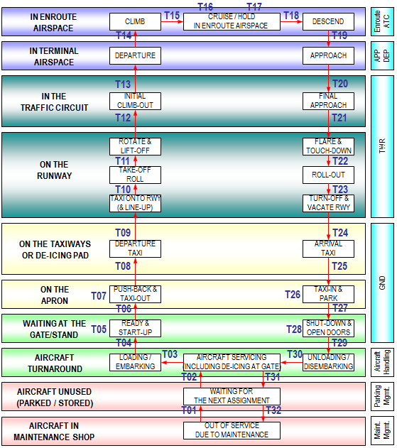
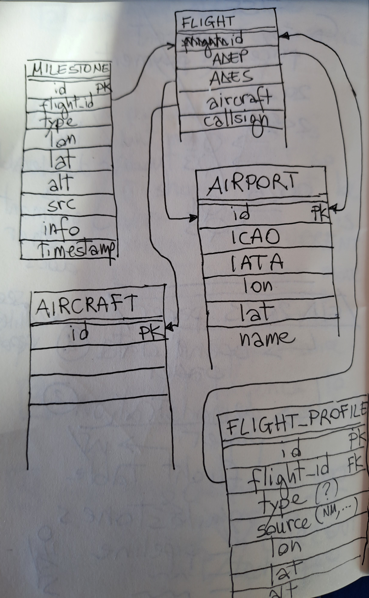

erDiagram
MILESTONE {
string id
}
FLIGHT {
string id
}
AIRPORT {
string id
}
AIRCRAFT {
string id
}
PROFILE {
string id
}
MILESTONE ||--|{ FLIGHT : id
This document details the concepts and ideas supporting the definition of flight milestones.
In a flight we can identify events that can help to monitor its evolution from a gate-to-gate perspective. Figure 2.1 shows a simplified diagram of a possible set of flight phases (white square boxes) and relevant events (Txy labels).

In general we are interested in analyzing performance at gate-to-gate level so as to cover both the airborne and the ground phases of flights. To this extent we summarize a flight down to some of its fundamental milestones as in the following list (from departure to arrival):
Other interesting milestones could be
Subsets of these milestones allow for the calculation of taxi-in (T24, T27) and taxi-out (T06, T09) times, runway utilization and sequencing (T12, T22), inefficiencies in the Terminal Manoeuvring Area (TMS) (via holding patterns and leveled portions of the descent) … Additional ad-hoc milestones can be defined for specific needs, for example FIR crossing milestones would be usefult to count Departure, Arrival, Internal, Overflight (DAIO) statistics.
A flight milestone is conceptually defined by
17.933996,59.653410,-2032021-09-27 10:43:11.234 UTCtop-of-climb or off-blockFurther useful attributes for business processing of the information are:
apdf (when data provided by airport), osn (extracted by OSN’s ADS-B data), nm (as calculated by EUROCONTROL’s Network Manager)F33R as the relevant parking position for an off-block milestone or 26 as the runway ID for a take-off milestone. This field can be also useful to define a custom fomat for airspace crossing, for example for a milestone like x-fir we could have the info contain something like from:LFFF, to:LFRR to provide info about the transition order of airspace penetration.A milestone-based representation of a flight is a way to reduce complexity for its representation and hence allow some (still useful) statistical analysis for performance monitoring.
Environmental emissions and climate impact are indicators more and more in news headlines and on the political agendas. With a milestone-based representation of a flight we can segment the phases of interest and calculated the relevant cumulative emissions.
For example we can split a flight in the following phases:
and calculate the fuel-burnt emissions by further splitting them.

For LTO we have four sub-phases:
For example taxi-out sub-phase can be framed by the ground portion from off-block to rwy-entry milestones which with defined assumptions in term of aircraft & engine type, full thrust percentage and number of engines in use can be handled to an emission calculator to compute CO2, NOx, … emissions.
The selection of milestones to model the flight and the further assumptions of how the aircraft is operated between those milestones will produce results with different levels of accuracy and precision.
A milestone-based modelling of a flight provides practical ways to extract operational indicators for the analysis of the operation performance at network, state, airport or airline level.
For example using the touch-down (T22 in Figure 2.1) with the contextual information we can calculate RWY utilization at each airport or inter-arrival times, etc.
TODO: milestones line FIR crossing (x-fir) could be used to extract an flight airspace profile. For example we could have AUA crossing (x-aua) or even elementary airspace (x-esa) ones. The tricky thing is obviously having a non-overlapping airspaces (of the same type)
The milestone concept can be modeled in entity-relationship fashion as in Figure 5.2.
erDiagram
MILESTONE {
string id
}
FLIGHT {
string id
}
AIRPORT {
string id
}
AIRCRAFT {
string id
}
PROFILE {
string id
}
MILESTONE ||--|{ FLIGHT : id

In words, a milestone refers to a flight (via the foreign key flight_id) and has few attributes as described in Chapter 3 (namely, type, timestamp, lon, lat, alt, src, info.)
A flight is (simply) defined by the aerodrome of departure (ADEP) and destination (ADES) (which are are foreign keys to AIRPORT.id), its callsign, take-off and landing timestamps, and aircraft (a foreign key to AIRCRAFT.id.) [NOTE: this is still simplistic…how do we cater for AFIL, ZZZZ (these could be just special airport entries without lon/lat/elevation) or crashes (again another special entry?)]
A flight (point) profile is a 4D sequence of timestamp and 3D positions as flown (or calculated). A flight profiles links to the relevant flight via the foreign key flight_id.
For OSN a flight profile is a state vector.